温度类
T · FT01-03从结构测温到火灾探测与开关柜触头:全光纤无源测温,兼作全网温补基准。
FT01 通用 · FT02 快速感温 · FT03 微型陶瓷
-40~120 ℃±0.5 ℃ / 0.1 ℃
两个电子传感器之间的几百米,是没有人值守的黑暗地带。事故恰恰最爱发生在两点之间。
高压电缆旁、潮湿隧道里、雷雨季节中,电子传感器的误报和失效,比真实事故来得更频繁。
人工巡检的周期以天计,结构劣化与温升的发展以小时计。你需要的不是记录,是提前量。
无源、抗电磁、本质安全。光缆铺到哪里,感知就延伸到哪里:每一米都是测点,每一秒都在值守。
宽谱光沿光纤前行,遇到光栅只反射一种波长。结构受力,波长偏移;±2 pm 的典型解调精度,让钢筋混凝土里微米级的变化,变成屏幕上一条清晰的曲线;温度交叉敏感,由补偿光栅在源头消除。
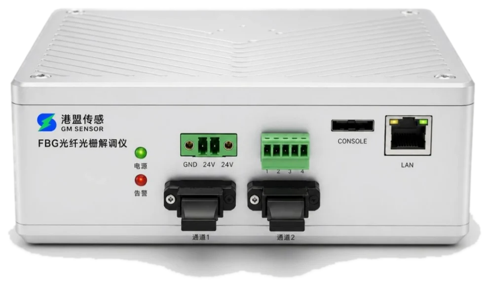
GM-FBG-16/32光纤光栅解调仪 · ±2 pm · 161×144×33 mm 紧凑机身探测脉冲沿通信光缆前行,任何振动都会改变该处背向散射光的相位。相位解调把整条光缆变成 23,552 个听诊器,挖掘、敲击、泄漏,定位到米;波形还原率 ≥99%,分得清"是什么、在哪里"。
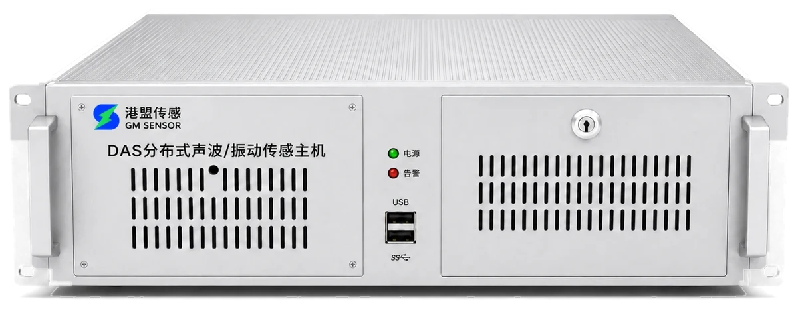
GM-DAS-50/100分布式声波 / 振动解调仪 · 2U 机架 · 相位解调拉曼散射的两束返回光,强度比只随温度变化。光时域反射按 0.2 米切分位置,0.5 秒完成一轮测量:每通道 12.5 公里的温度地图,连接头上一度的爬升都藏不住;报警经干接点直连消防主机。
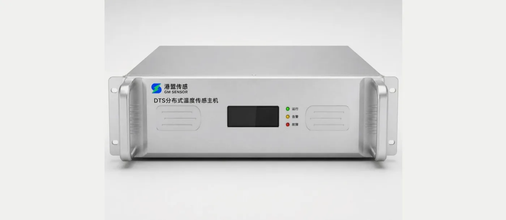
GM-DTS-04/08分布式测温解调仪 · 2U 机架 · 4~8 通道三台主机对现场的要求就这六条,建议值与典型要求,现场勘察后按项目确认。
GM-F 系列 8 大类、21 款标准型号:量程、尺寸、封装全系可定制,选型、报价、投标一目了然。
示例 GM-FT01 = 港盟 · 光栅 · 温度类 · 01 号;主机后缀即关键规格:GM-FBG-16/32(通道数)· GM-DAS-50/100(距离 km)· GM-DTS-04/08(通道数)
风电专用产品沿用成熟供货型号(GM-WTB / WTT / WTF 系列);原锚索计 GM-PAC04 并入 GM-FL01。
从结构测温到火灾探测与开关柜触头:全光纤无源测温,兼作全网温补基准。
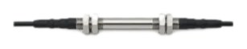
混凝土内部、结构表面、钢筋轴力:结构受力监测三件套,与 FT01 成对温补。
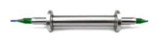
裂缝开合、结构位移、大量程拉绳与静力水准,变形监测全覆盖。
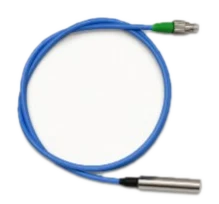
孔隙水压与土体压力:渗压 / 土压组合重建坝体浸润线与有效应力状态。
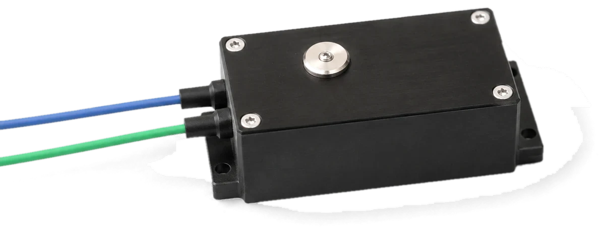
大跨桥梁一阶模态从 0.5 Hz 起步:低频高灵敏,多支组合实现 2D / 3D 测量。
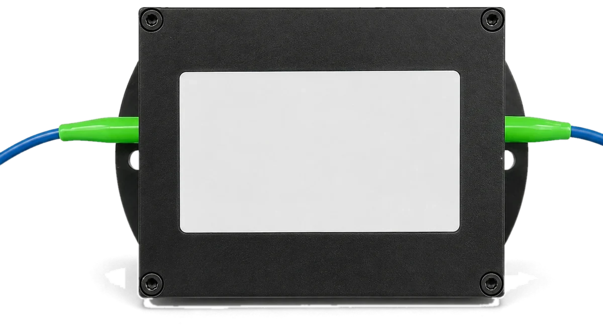
桥塔、杆塔与高层倾斜,盾构收敛与滑坡:双光栅封装温度自补偿。
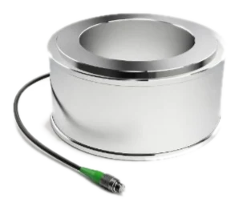
从 2000 kN 锚索到智能锚杆:覆盖"锚索、锚杆、围岩"完整受力链。
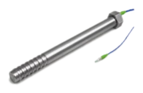
管片与法兰螺栓锚固应力直测,松动断裂趋势在断裂之前识别。
叶片载荷、塔筒应力、法兰螺栓、姿态与锚索,全光纤设计天然防雷;整机接入 GM-FBG-16/32 与监测平台。
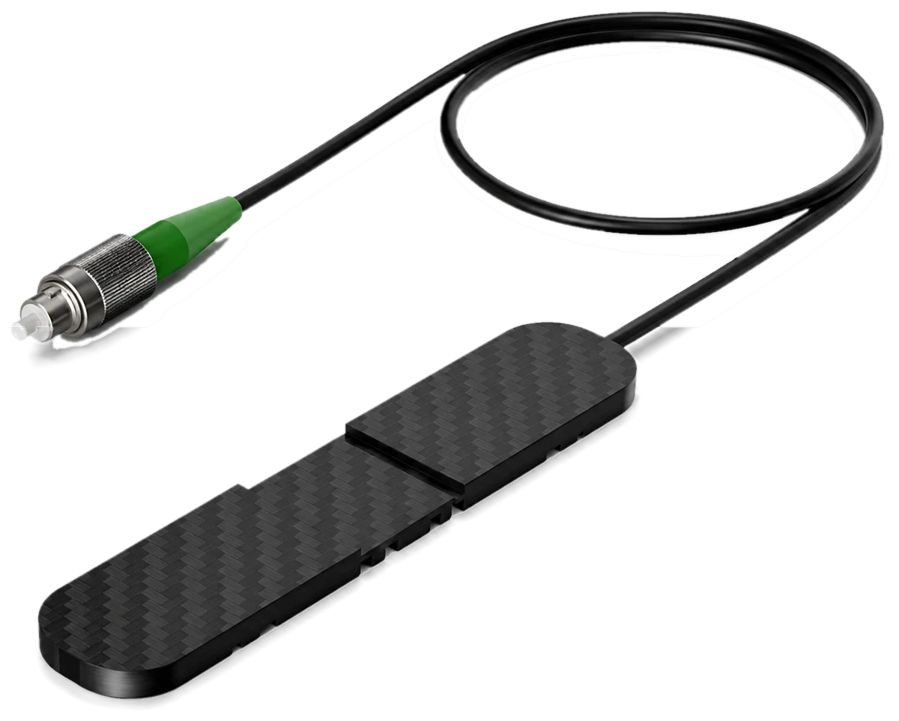
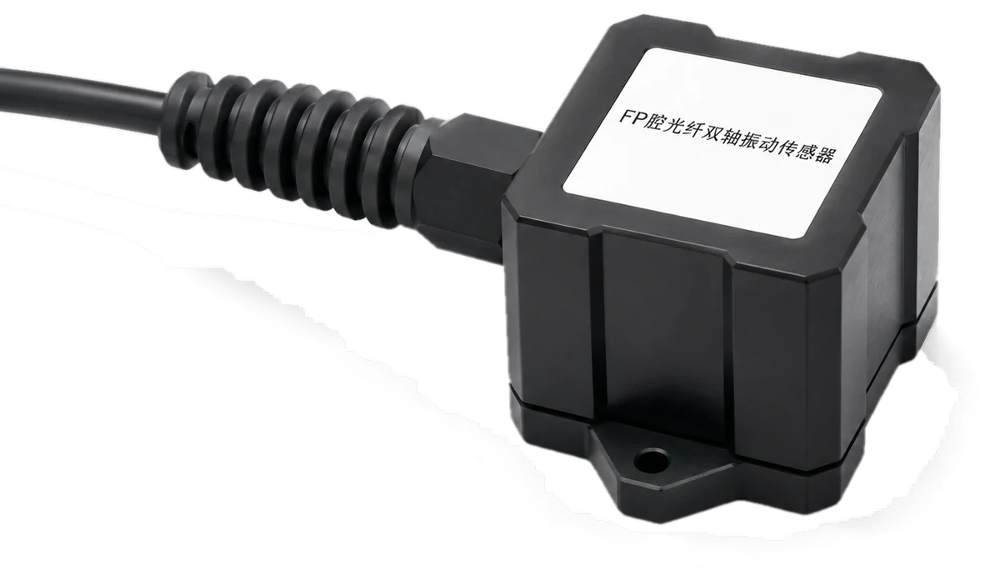
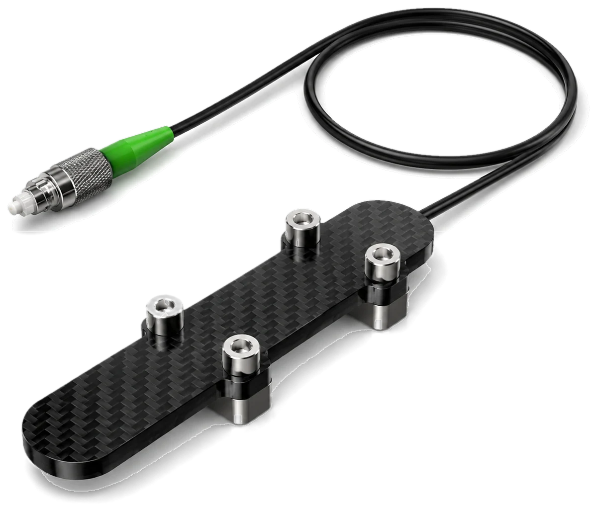
全系 IP68(风电系列 IP65)· C 波段 1528~1568 nm · FC/APC 接头;振动类含标准 / 增强两代,合计 21 款标准型号;兼容符合 C 波段标准的第三方解调设备,无供应商锁定。
查看全系规格与产品手册同步的关键参数,选型不用来回翻 PDF;完整版规格书与选型手册,一封邮件送达。
高性能:±2 pm 典型精度、±1 pm 重复性、40 dB 动态范围;工业级:宽温宽压、低功耗;小体积:紧凑机身便于嵌入集成。典型应用:桥隧结构健康监测、风电叶片与混塔、电力设备测温。
超长距离:标配 50 km,选配拉曼放大器可达 100 km;宽频海量:0.01 Hz~50 kHz 响应、23,552 道并行解调;高保真:窄线宽激光器,波形还原率 ≥99%,定量还原声波模型用于事件分类。典型应用:油气管道、周界安防、轨交保护区、地震与地质勘探。
自研恒温光电模块与全嵌入式板卡(ARM + Linux);属规范定义的"线型感温火灾探测器",单机覆盖数公里,定位精确到米级以内,寿命长免维护。典型应用:电缆隧道、综合管廊、交通隧道、大坝、油气储运火灾预警。
量程、尺寸与封装全系可按项目定制;应变类与 GM-FT01 成对布设,实现温度补偿后的真实应力解算。
| 型号 | 名称 | 量程 | 精度 / 分辨率 | 关键参数 |
|---|---|---|---|---|
| 温度类 T · TEMPERATURE | ||||
| GM-FT01 | 通用温度传感器 | -40~120 ℃(可定制) | ±0.5 ℃ / 0.1 ℃ | Φ9×100 mm · IP68 · 夹持 / 绑扎 / 埋入 |
| GM-FT02 | 快速响应感温单元 | -40~120 ℃(可定制) | ±0.5 ℃ / 0.1 ℃ | Φ7×100 mm · IP68 · 防爆区适用 · 火灾探测 |
| GM-FT03 | 微型陶瓷温度传感器 | -40~120 ℃(可定制) | ±0.5 ℃ / 0.1 ℃ | Φ4×45 mm · IP68 · 开关柜触头等狭小部位 |
| 应变与钢筋应力类 S · STRAIN | ||||
| GM-FS01 | 埋入式应变计 | ±1000 / ±1500 με | 1% F.S. / 1 με | 标距 100 mm · 埋入 · IP68 · 与 FT01 成对温补 |
| GM-FS02 | 表面安装式应变计 | ±500 / 1000 / 1500 με | 1% F.S. / 1 με | 标距 100 mm · 焊接@钢 / 粘接@砼 · IP68 |
| GM-FS03 | 钢筋应力计 | 拉 200 / 压 100 MPa | 1% F.S. / 1 MPa | 各钢筋规格 · 长 600 mm · 对焊 / 绑扎 |
| 位移与沉降类 D · DISPLACEMENT | ||||
| GM-FD01 | 裂缝计 | 20 mm(可定制) | 1 / 0.1 mm | 埋入全密封 · -40~80 ℃ · IP68 |
| GM-FD02 | 位移计 | 10 / 100 mm | 0.1 / 0.5 mm · 分辨率 0.01 mm | Φ40×200 mm · 底座安装,便于更换标定 |
| GM-FD03 | 拉绳位移计 | 100 mm(可定制) | 1 / 0.1 mm | Φ40×350 mm · 标配 20 m 拉绳远端引出 |
| GM-FD04 | 静力水准仪 | 0~100 mm | 1 / 0.1 mm | Φ120×250 mm · 组网测沉降 · 不锈钢 / 注塑 |
| 压力类 P · PRESSURE | ||||
| GM-FP01 | 渗压计 | 0.35 / 1 MPa(可定制) | 0.5% / 0.1% F.S. | Φ30×120 mm · 投入 / 埋入两用 · IP68 |
| GM-FP02 | 土压力计 | 1 / 2 MPa(可定制) | 1% / 0.1% F.S. | 规格可定制 · 埋入 · IP68 · 与渗压计组合 |
| 振动类 A · DYNAMICS | ||||
| GM-FA01 | 加速度传感器 | 2 g · 0.5~50 Hz | 2 mg / 0.5 mg · ≈500 pm/g | 110×35×25 mm · IP68 · 标准 / 增强两代 · 多支组合 2D / 3D |
| 倾角类 I · INCLINATION | ||||
| GM-FI01 | 倾斜传感器 | ±5° | 0.01° / 0.001° | 105×80×28 mm · 螺孔安装 · IP68 · 双光栅自温补 |
| 锚固与支护类 L · ANCHORING | ||||
| GM-FL01 | 锚索计(原 GM-PAC04) | 0~2000 kN · 20 Hz | 3~6 支冗余测力 · 120° 偏载识别 | -40~+85 ℃ · 95%RH · IP67 |
| GM-FL02 | 锚杆(索)压力计 | 0~150 kN | 5% F.S. · 1 kN | 套接锚杆托盘与岩壁之间 · IP54 |
| GM-FL03 | 测力锚杆 | 70 kN | 6% F.S. / 1% F.S. | 光栅内置钢锚杆 · 应变 / 轴力 / 弯矩 / 剪应力 |
| GM-FL04 | 离层传感器 | 200 mm 可续测 | 5% F.S. | 395×306×34 mm · 顶板离层趋势早发现 |
| GM-FL05 | 智能锚杆 | 拉伸 500 MPa | 1%(0.5% 可选) | FRP 杆体即传感器 · 植入式光栅 · IP68 |
| 螺栓类 B · BOLT | ||||
| GM-FB01 | 螺栓应力计 | 100 MPa | <1% / ≤0.1% F.S. | 按螺栓规格定制 · 铠装防水 · -30~+80 ℃ |
叶根 3% 区域截面布置 3~4 支载荷传感器,符合 JG/T 422-2013;叶片载荷 + 塔筒应力 + 法兰间隙 + 混塔锚索统一接入 GM-FBG-16/32 与监测平台,构成风机结构安全整体监测系统。
| 型号 | 名称 | 量程 | 关键指标 | 防护 / 备注 |
|---|---|---|---|---|
| GM-WTB01 | 叶根载荷传感器 | ±5000 με | ≤0.1% F.S. · 温补 14 pm/℃ | IP65 · 特种胶装 · 全光纤防雷 |
| GM-WTT02 | 表面应力传感器 | ±5000 με | 0.88 pm/με · 重复性 0.5% | IP65 · 表面粘贴 · 可互换 |
| GM-WTT03 | 双轴振动传感器 | ±5 g / ±10 g | 0.1~70 Hz · 500~1000 pm/g | IP65 · 双轴同测 · 量程可定制 |
| GM-WTF05 | 法兰间隙传感器 | ±300 μm | 分辨力 0.05 μm · 位移系数 53 μm/nm | 102×32×5 mm · 断裂前预警 |
| GM-FI01 | 双轴倾角传感器 | ±5° | 0.01° / 0.001° | IP68 · 塔筒姿态与基础沉降 |
| GM-FL01 | 锚索计 | 0~2000 kN · 20 Hz | 3~6 支均布 · 120° 偏载识别 | IP67 · 混塔预应力锚索 24 小时在线 |
光纤传感 + 计算机检测 + 数据通讯一体化;顶板状态自动监测与汇报,减少井下人工巡检,为锚杆支护施工与参数优化提供依据。
应变、温补、振动、倾角、位移、索力六类测点单纤串联,接入 SHM 平台在线评估、事件报警、应急预案;传感器供货 / 系统集成 / 数据服务三种交付形态。
GM-DTS-04/08 + 感温光缆(正弦贴敷 / 悬挂)+ 监测软件;局部高危点位叠加 GM-FT02 感温单元增强,报警联动消防主机与风机水泵。
完整版规格书 PDF、选型手册与授权书:邮件索取,一个工作日内送达
传感器与光缆负责感知,三台主机负责解调,平台负责研判,预警负责找到人。每一米光纤,都接在同一条链路上。
业主的真问题很具体:系统各说各话、报警响成背景音、报表靠人熬夜。平台的职责只有一个:让数据变成结论,让结论找到人。
治数据孤岛:解调仪、DAS / DTS 主机、环境设备、视频与第三方系统,装进同一块屏幕。
治报警疲劳:阈值、趋势、关联规则与模型交叉研判,分级降噪,让每一声报警都值得起身。
治事后追责:长期数据里读出趋势与风险等级,把维护从"坏了修"推向"预判养"。
治人工整编:状态日报、告警记录与运维建议自动生成,全程留痕、随时回溯。
基础设施进入存量养护与设备更新周期,监测预算却要求更轻、更省、更可复用。选择你的战线,拿走对应的轻量化解题思路。
矿山顶板、岩土边坡、冷链仓储等更多战线同样成立。监测数据正在从成本项变成资产项:从出了事再修,到看着趋势养。
覆盖水利、轨交、公路、市政、桥梁多领域在运项目,部分案例与高校科研团队联合完成。
多家单位对北京段下游输水管道对比监测,基于 DAS 与管道内既有通信光纤,成为唯一一家监测结果与实际情况完全吻合的单位,受邀签订断丝监测联合研发框架协议。
44.8 km 保护区实时监测。桃花潭站实录:15:36 预警生成,15:38 推送,15:41 无人机复核,全流程 5 分钟闭环处置。
22 km 路段实时监测。2025 年 2 月事故实录:15:30 系统预警推送,较接警时间提前 6 分钟;上线至今稳定无故障运行。
受合肥市政府与发改委委托,对 300 米重点堤段构建地下结构图像:探明地下 3~5 m 连续低速异常带与 7~10 m 长期富水带,支撑汛前检测、汛时监视、汛后修复。
613 米渠段获取地下 30 米以浅速度结构,圈定渗流富水区;深圳地铁 22 号线盾构掘进前对左右线地层精细化成像,提前识别孤石与富水带。
利用通信光缆清晰分辨主桥墩、斜拉索振动特征与车辆通行信号;结合模态成像快速分析固有频率、阻尼与振型,长期跟踪评估桥梁健康水平。
中国地震局 · 安徽省地震局 · 江苏省地震局 · 中科院南海海洋研究所 · 合肥轨道 · 安徽交控 · 江西交投 · 清华大学 · 中国科学技术大学 · 浙江大学
名录持续更新;客户标识以书面授权后展示为准,部分案例与高校科研团队联合完成。
明确监测对象、关键风险点与现场条件;免费出具授权书、技术应答文件、深化设计图与工程概算,重点项目陪标讲标。
完成传感器选型、点位设计、光缆路径、主机配置及平台功能规划。
提供设备安装、传感器布设、系统调试、数据验证与基础培训;随货附安装施工手册、现场熔接标定指导与验收测试规程。
支持远程查看、报警策略优化、数据分析、系统扩展与长期技术服务。
标准服务政策,最终以供货合同约定为准。
产品经批量、长周期工程应用验证,重点关注复杂环境下的稳定性、数据连续性与长期可靠性。
依托成熟制造流程与质量控制体系,支持标准产品、批量采购及大型工程项目的稳定交付。
覆盖核心器件、传感器封装、解调主机与系统集成,提升产品一致性、交付效率与成本竞争力。
支持封装形式、量程精度、接口通信、光纤长度、外观结构及系统功能等多维度定制。
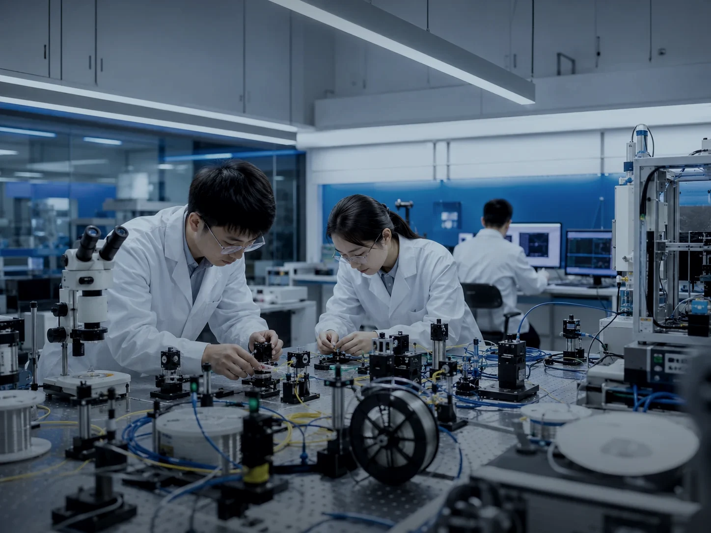
DAS 技术与中国科学技术大学、浙江大学等团队联合研发,核心部件国产化率高于 90%;"通信光缆即地震台阵"的观测范式,已在国际顶级期刊得到验证。
标志为设计示意,以官方证书为准;证书编号与扫描件可应询提供。
告诉我们监测对象与现场条件,三个工作日内,拿到点位设计、设备配置与报价。
销售总监 王永强 · 电话 / 微信 176 2125 1612,或来信 17621251612@163.com
上海市浦东新区海基六路 99 弄智萃科技中心创新魔坊 3 期 3 号楼零界魔方 729 室 · www.gm-sensor.com